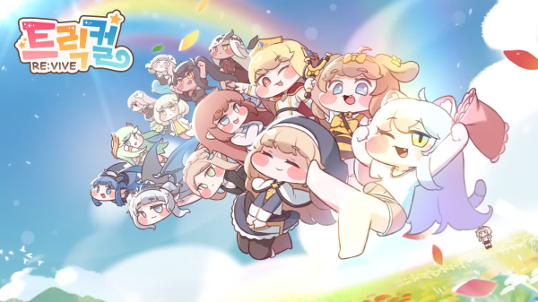
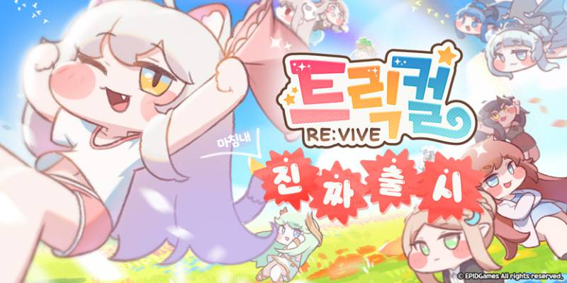
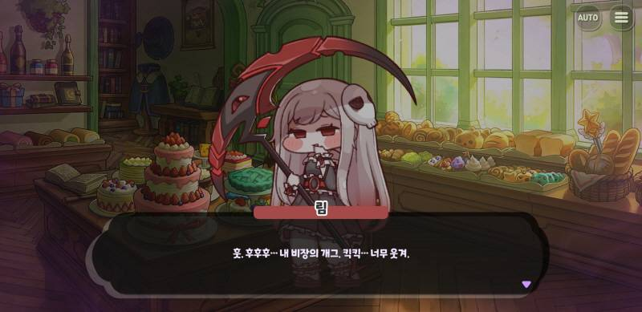
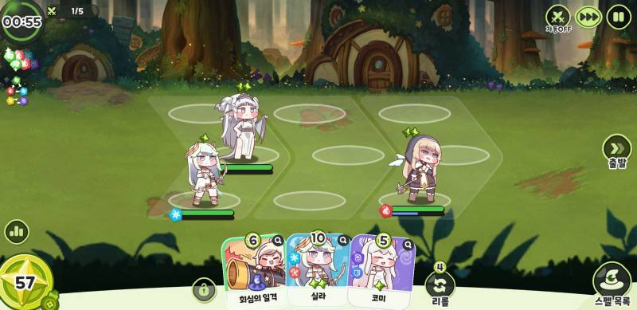
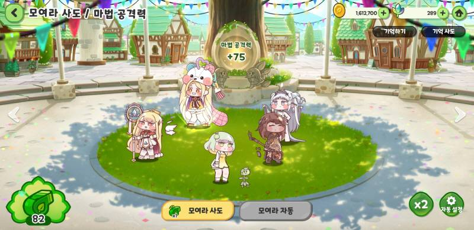
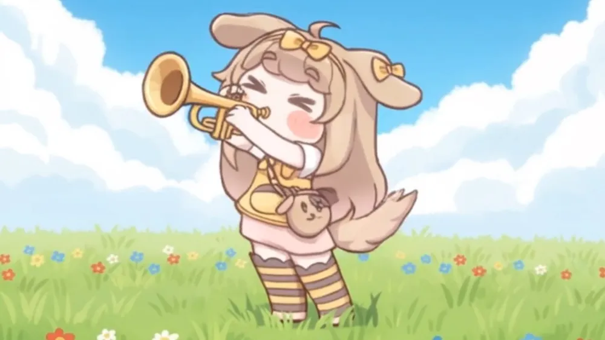

유저를 붙잡는 시스템 6가지 분석

강해지고 싶어서가 아니다. 응원하고, 정이 들고, 같이 웃기 때문에 다시 켠다.
대표의 사비 투입과 위기 극복 서사가 있다. 과금과 플레이가 지출이 아니라 응원이 된다.
볼따구와 연회장 교감이 있다. 정을 쏟을수록 새 반응이 열린다.
방송과 밈이 있다. 개발진이 직접 망가지며 같은 눈높이에서 웃는다.
| 구분 | 일반 수집형 RPG | 트릭컬 리바이브 |
|---|---|---|
| 과금 동기 | 경쟁, 과시 | 응원, 지지 |
| 유저 위치 | 고객 | 함께 살려낸 동반자(교주) |
| 캐릭터 | 티어·스탯 중심 도구 | 교감하는 애착 대상 |
| 소통 | 일방향 공지 | 밈과 자폭 개그의 라이브 방송 |
| 엔드 콘텐츠 | 하드코어 랭킹전 | 밈 생산, 교감, 가벼운 경쟁 |

▲ 2023년 정식 리바이브 출시 공식 비주얼 — 실패를 딛고 유저(교주)와 함께 살아난 서사의 출발점
시계 방향으로 반복. 5번은 다시 1번으로 이어진다.
| 시스템 | 핵심 | 자극하는 동기 |
|---|---|---|
| 방송·공식 밈 | 고객이 아니라 같은 세계관의 집단 | 소속감, 유머 |
| 대표 서사 | 과금이 응원으로 바뀜 | 응원, 친밀감 |
| 줘팸터 (PvP) | 소규모 그룹, 주기적 리셋 | 성취감, 순위 |
| 엘리아스 프론티어 | 보스 기믹 교체, 공략 공유 | 도전, 전략 |
| 수집·시너지 | 확정 획득, 조합 다양성 | 수집, 최적화 |
| 연회장 친밀도 | 정을 쏟을수록 새 반응 | 감정적 애착 |
→ 밈이 신규 유저의 낮은 문턱이 된다.
→ "우리가 살려냈다"는 연대감, 자발적 밈·홍보.

▲ 개발진의 자폭 개그와 유쾌한 스토리텔링이 녹아든 인게임 사도 대화 연출
→ 부담 없는 반복 참여 동기.
→ 공략 공유와 토론의 계기.
→ 이탈 감소, 낮은 티어도 활용, 조합 이야기 증가.

▲ 사도 출격 배치와 학년 강화, 카드 덱 및 속성 시너지가 결합된 핵심 전투/PvP 화면
→ 캐릭터가 전투 도구에서 애착 대상으로 바뀐다.


▲ (좌) 사도들이 모여 상호작용하는 교단 본부 화면 / (우) 캐릭터 애착과 볼따구 밈 확산을 이끈 대표 마스코트
분석자 해석
| 지점 | 내용 |
|---|---|
| 신뢰 의존 | 과금이 응원이려면 운영 신뢰가 전제다. 실수는 애정만큼 크게 돌아온다. |
| 교감 신선도 | 반응 대사는 한 번 보면 익숙해진다. 지속적인 추가가 필요하다. |
| 서사의 일회성 | 위기 극복 서사는 이미 공유됐다. 새 에피소드가 이어져야 한다. |